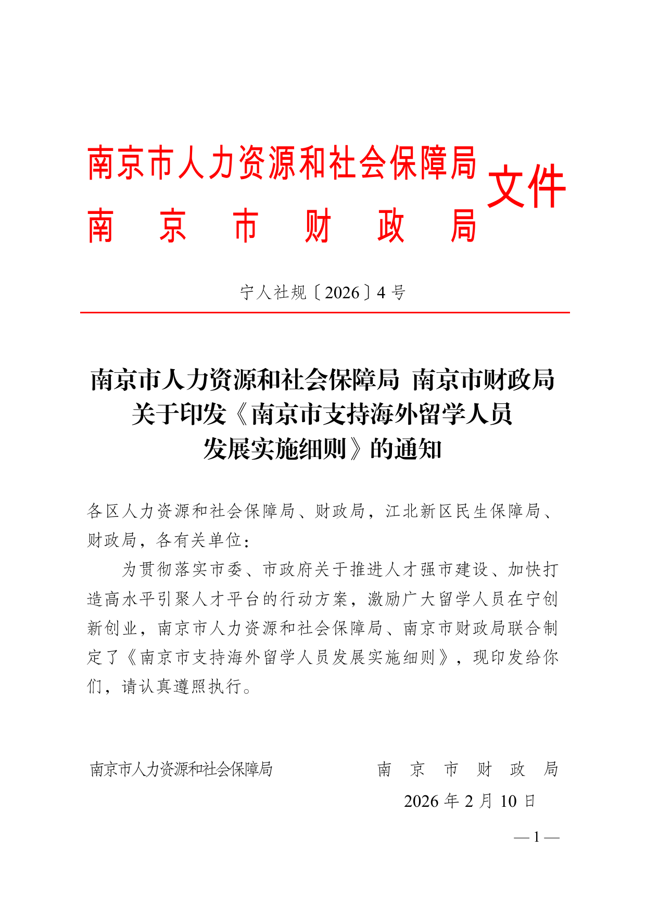

回国鸭 · 给澳洲留学生的回国求职手册
2026 澳洲留学生
回国就业
城市机会地图
北上深广杭宁成青：政策、岗位与落地条件实查及人群适配建议。
8 城结果卡5 类人群路线当前官方入口先投 / 备选 / 暂缓
北上深广杭宁成青：政策、岗位与落地条件实查及人群适配建议。
城市没有统一冠军。对澳洲留学生，更有用的答案是：你的岗位在哪些城市更集中、当地政策对你是否真的可用、落地成本能否撑过求职期。
适合愿意承受高竞争与高落地压力，优先争取总部、国际业务、金融、科研、央国企与专业服务岗位的人。
深圳偏科技硬件与出海，杭州偏平台、电商与内容，广州偏消费、商贸、汽车、文旅和公共服务。
适合更看重生活与机会平衡，且目标行业能对应当地产业的人；不能只因成本较低就选择。

扫码备注「城市地图」，发来毕业月份、专业、目标岗位和当前所在城市。社群帮助找官方入口和复核信息，不替个人作最终决定。
“落地压力”是编辑判断：综合岗位集中区、办理依赖、求职期生活约束，不是官方成本排名。
| 城市 | 最强岗位主场 | 政策结论 | 落地压力 | 优先人群 |
|---|---|---|---|---|
| 北京 | 央国企总部、科研、AI、专业服务 | 落户高度依赖有资格的用人单位 | 高 | 公共部门 / 总部 / 研究路线 |
| 上海 | 金融、消费、专业服务、生物医药 | 2026 留学人员支持框架有效；具体待遇分事项 | 高 | 国际业务 / 金融 / 品牌 |
| 深圳 | 硬件、AI、产品、出海、新能源 | 有留学人员引进通道；不以普惠现金为卖点 | 高 | 科技产品 / 工程 / 出海 |
| 广州 | 消费、商贸、汽车、文旅、公共服务 | 应届口径对近年国境外毕业生有明确示例 | 中高 | 运营 / 市场 / 大湾区综合路线 |
| 杭州 | 电商、平台、内容、数字服务 | 海归落户通常需单位与正常社保 | 中高 | 互联网 / 电商 / 内容 |
| 南京 | 软件、研发、先进制造、生物医药、国企 | 留学政策完整，但资金多绑定项目 | 中 | 技术研发 / 事业单位 / 国企 |
| 成都 | 游戏、内容、新媒体、电子信息、消费 | 落户相对友好；现金支持不宜泛化 | 中 | 内容 / 游戏 / 西部区域职能 |
| 青岛 | 海洋、轨交、家电、外贸、地方国企 | 留学人才服务链条突出，岗位面较集中 | 中 | 制造 / 外贸 / 日韩业务 |
一线综合：上海；行业集中：深圳或杭州；平衡落地：南京、成都或青岛中选 1 座。再按岗位方向替换。
先用上海/北京观察岗位要求，再用广州/南京/成都验证能否以更低压力获得相似职能，不要一开始投遍全国。
机会密度高，但户籍与落地确定性最低；先拿岗位，再谈长期留下。
八城中综合职业面最完整；专业尚未收窄时，是最好的市场验证场。
把海外学习转成产品、工程或出海能力的人更占优势。
对运营与内容岗位最友好的城市之一，但必须拿出数据、工具和商业闭环。
生活与机会平衡较好；但“轻松城市”不是求职策略。
具体落户、补贴与岗位从全国人社政务服务平台进入成都地方窗口复核。
把“第一投递”当主战场，“第二验证”用来比较相似岗位，“平衡备选”用于控制求职期风险。
第一投递：上海、广州 第二验证：杭州、深圳 平衡备选：成都。若作品集缺数据，不要先冲纯增长岗。
第一投递：深圳、上海 第二验证：杭州、北京 平衡备选：南京、成都。硬件/供应链优先深圳，研发/国企优先南京。
第一投递：北京、南京 第二验证：广州、青岛 平衡备选：所在家庭城市。先看招聘对象和认证时间，不能用城市政策代替岗位资格。
第一投递：上海、南京 第二验证：北京、深圳 平衡备选：青岛。项目资助只在成果、单位与申报主体匹配时有意义。
第一投递：杭州、成都、广州 第二验证：上海 平衡备选：青岛。先区分内容生产、活动执行、用户增长和商业化，不用一个“运营”覆盖全部。
你不需要把八城都研究完。选 3 城，每城 10—15 家单位，用真实回复校准结论。
第一投递、第二验证、平衡备选各 1 座。
每城 10—15 家单位，保留官网入口。
统一简历底稿，按岗位改证据。
按回复、面试与拒绝原因调整城市顺序。
| 城市角色 | 单位数 | 岗位数 | 7 天回复 | 面试 | 政策待确认 | 第 14 天结论 |
|---|---|---|---|---|---|---|
| 第一投递 | 10–15 | 继续 / 调整 | ||||
| 第二验证 | 10–15 | 升级 / 保留 | ||||
| 平衡备选 | 8–10 | 保留 / 暂缓 |
招聘方回复、笔试、面试、要求补充材料、明确拒绝原因。平台曝光或“已查看”只能作弱信号。
不是 3 天没 offer 就换；而是 20—30 个匹配岗位仍无有效回复，且拒绝原因集中在当地要求时再调整。
14 天后你必须能写出：我先投哪座城、哪些单位对我有回应、哪条政策仍待确认、下一轮删掉哪些城市或岗位。

截至 2026-07-30，本版优先使用政府、人社、国资、招聘单位与国家公共就业平台。成都证据完整度较低，已在正文明确降级。
政策原文、政府办事指南、招聘单位官网。可以支撑资格或流程表述。
政府转载、公共就业平台、官方活动报道。用于说明入口和当前行动。
产业与生活辅助信号。不能单独支撑补贴、落户或岗位资格。
| 官方入口 | 你在这里查什么 | 使用边界 |
|---|---|---|
| 国家留学人才就业服务平台 | 留学人才岗位、活动与服务 | 具体岗位回到招聘单位原文 |
| 全国人社政务服务平台 | 地方人社、就业、社保与办事入口 | 进入城市/区级页面继续核验 |
| 国家大学生就业服务平台 | 高校毕业生岗位与招聘活动 | 核对国境外毕业时间与认证要求 |
| 本书动态附录 | 八城政策版本、窗口状态与更新记录 | Melody 每周四核验；行动当天仍需复查 |

真实证据示例：南京市人社局、南京市财政局宁人社规〔2026〕4号官方 PDF 首页。正文只把它用于说明政策身份与项目边界，不把项目资助改写成普通留学生普惠补贴。
打开官方 PDF
研究日期：2026-07-30。所有链接已设置为可点击；PDF 导出时保留超链接。详细证据边界与八城状态见动态附录。
先从本书选出“第一投递 + 第二验证 + 平衡备选”，再带着毕业月份、专业和目标岗位联系 Amelia，继续梳理回国求职路径。
政策、申请窗口与招聘入口每周四复核。扫码时备注「城市地图」，可询问最新附录入口。